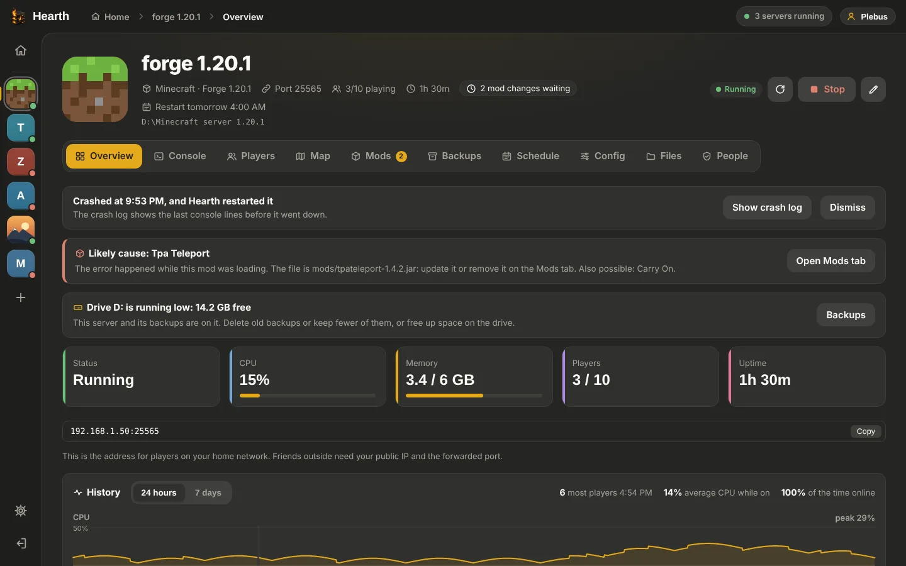
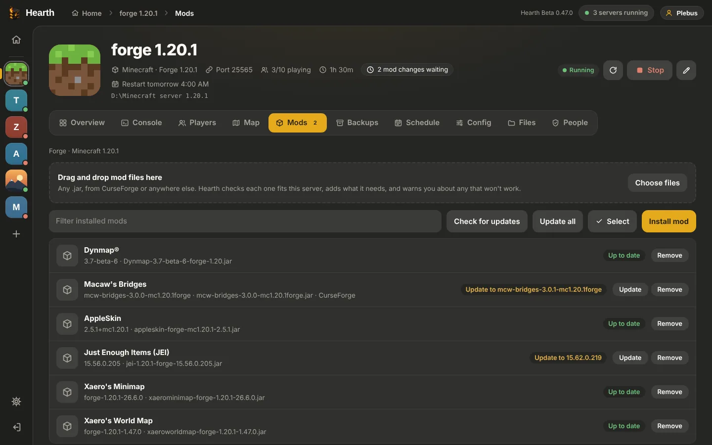
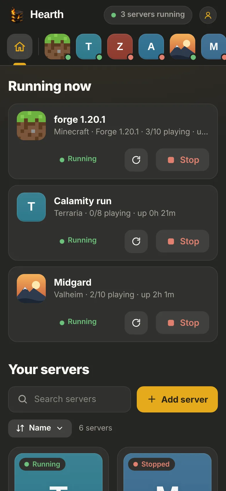

Hearth runs Minecraft, Valheim, Palworld, ARK, Rust and more on your own Windows PC. Start, stop, back up, install mods and modpacks, and run your servers together with friends, from your PC or your phone.
Free beta · Hearth Beta 0.43.1 · Windows 10 and 11 (64-bit) · About 110 MB
New: CurseForge mods and modpacks, and friends' servers in your own Hearth
The jobs you'd normally do in command windows and config files, in one app that keeps an eye on things for you.
Every server on one screen, with live CPU, memory and who's playing. Stops save the world first.
Install Minecraft mods from Modrinth or CurseForge, or a whole CurseForge modpack in a few clicks. Hearth checks versions and names the mod behind a crash.
Invite friends by their Hearth username as owners, helpers or guests, each on the servers you pick. Their Hearth shows your servers next to their own.
Link your Hearth account and your Hearth gets its own secure address for free. Open it on your phone, even on mobile data, with no router setup for Hearth.
Automatic backups on a schedule and before every update or modpack change, with one-click restore. Hearth warns you before a drive fills up.
If a server crashes, Hearth restarts it, keeps the crash log and can tell you on Discord.
Hearth installs server files with SteamCMD, spots game updates and installs them when nobody is playing.
One button tests your server's ports from the internet, and Hearth spots a Windows Firewall rule that blocks players and fixes it for you.
Nightly restarts with warnings for players, timed backups and commands, on the days you choose.
A free Hearth account is your one name across every Hearth. Friends add you by username, and their servers show up right inside your own Hearth app.
Make a free accountPick a username at hearthapp.cc/account. Your friends only need that name.
A friend invites you from a server's People tab. Accept it in your Hearth app or on the account page.
Their servers sit on your home page with status, players and Start / Stop, logged in for you. No passwords shared.
Each one with its own settings, player list and the right way to stop it. Anything else you can start with a command works too.


Hearth runs on the PC that hosts your servers. Your phone and your friends just open it.
Yes, while it's in beta. Hearth accounts and the automatic address are free too.
No. They join your server in the game like always. Hearth is for you and the friends who help run things.
It's one username for every Hearth. Friends invite you by it, their servers show up in your own Hearth, and linking your Hearth gives it a secure address you can open from anywhere. You don't need one to run your own servers.
No. Your servers run on your own PC, and your worlds and settings stay there. Hearth starts with Windows and keeps your servers going from the tray.
Yes, for Minecraft. Add a free CurseForge API key in Settings › Mods, then install mods or whole modpacks. If a pack's author only allows downloads from CurseForge itself, download the pack's .zip and give it to Hearth with "Use a modpack file".
Windows warns about new programs that haven't been downloaded by many people yet or aren't signed with a paid certificate. Click More info, then Run anyway. The warning goes away as more people use Hearth.
By itself. When a new version is ready, Hearth tells you, and installs it when you restart it. Servers that were running start again afterwards.
Hearth's address goes through Cloudflare over https and needs an account to do anything. The host has to turn on two-factor login before Hearth can be reached from outside, wrong passwords lock out the address they come from, and every friend only gets the role you give them on the servers you pick.
One download, and every server in one place.
Hearth Beta 0.43.1 · All versions and what's new